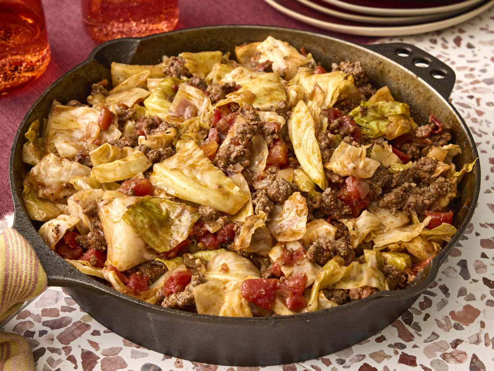

Unstuffed Cabbage Roll Recipe

Credit: Photographer: Kyle Carpenter / Food Styling: Julian Hensarling / Prop Styling: Prissy
Unstuffed Cabbage Roll
This is an easy casserole made with ground beef, cabbage, garlic, and tomatoes. My kids don't even like cabbage, but they love this dish! Serve with rice for a comforting weeknight dinner. Also, the longer it stands the better it tastes!
Ingredients
- 2 pounds ground beef
- 1 large onion, chopped
- 1 small head cabbage, chopped
- 2 (14.5 ounce) cans diced tomatoes
- 1 (8 ounce) can tomato sauce
- 1/2 cup water
- 2 cloves garlic, minced
- 2 teaspoons salts
- 1 teaspoon ground black pepper
Steps
- Gather all ingredients
- Heat a Dutch oven or large skillet over medium-high heat. Cook and stir beef and onion in the hot Dutch oven until browned and crumbly, 5 to 7 minutes; drain and discard grease.
- Add cabbage, tomatoes, tomato sauce, water, garlic, salt, and pepper and bring to a boil. Cover Dutch oven, reduce heat, and simmer until cabbage is tender, about 30 minutes.
- Serve hot and enjoy!
Home